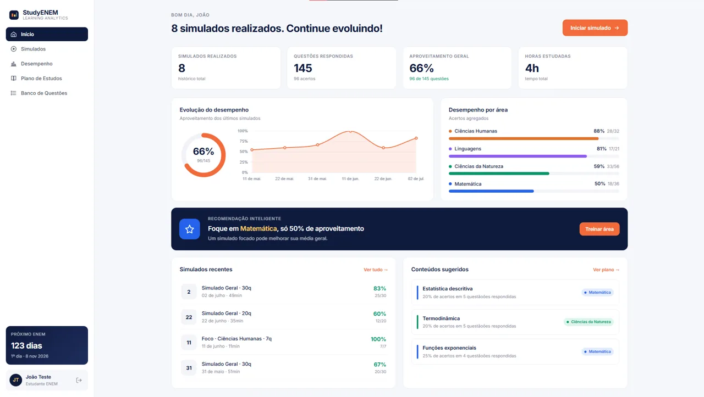

01 / 03
StudyEnem
Plataforma de simulados do ENEM, meu TCC na Ciência da Computação. Cada simulado alimenta métricas por área e um plano de estudos que prioriza onde você mais erra.ENEM practice-exam platform, my Computer Science capstone. Every exam feeds per-area metrics and a study plan that ranks where you miss the most.
Ver projetoCase study